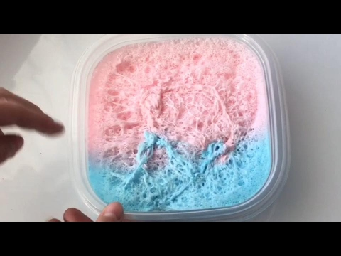

Bubbly Slime
Bubbly slime is a great way to have fun with your kids and teach them a little about science! There are lots of ways to make slime
with bubbles quickly and easily at home. Learn how to make a slime with a crunchy, bubbly exterior or a slime you can blow bubbles with.
Procedure
- Pour 12 ounces (340 g) of white glue into a bowl.
- Cover the layer of glue with foaming hand soap.
- Stir the glue and hand soap together.
- Add a layer of shaving cream to the top and stir it in.
- Mix in glitter, food coloring, or paint (optional).
- Add slime activator.
- Touch your slime to test it for stickiness and shape.
- Knead and stretch your slime for at least 3 minutes.
- Press the slime into the bottom of a sealable plastic container.
- Knead a thin layer of shaving foam into the top.
- Let it sit for two or three days.
- Remove the slime
ENJOY!

Let it sit for two days. Seal up your slime and let it sit for two days. This will give the crunchy bubbles
time to develop. You can let it sit longer, but don’t wait more than a week or so.
After two days, take the slime out and have fun crunching the bubbles! You can roll it into a ball, stretch it out, or just
enjoy squeezing and poking at the bubbles. It will last for up to three or four weeks.